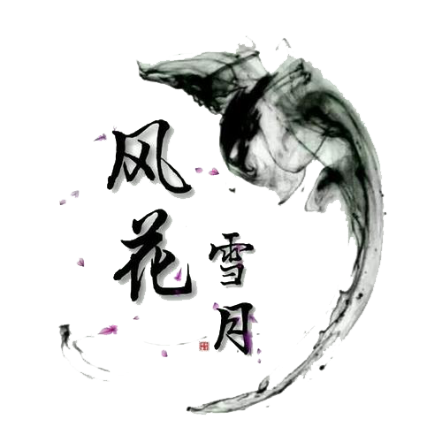

其实，不论是生活在什么状态下，只要温饱不再是问题，能有那么一点闲暇时光，人们都会想要过一种如诗的日子，诗意人生，是中国人骨子里的梦。
从诗意弥漫的时空来看，中国是诗的国度。从上古围猎劳动时期开始，人们就用简单的音阶发出诗的语言，以至于在祭祀、征战、恋爱等一切活动中都离不开诗的影子，后来形成了汇集若干年代里各个诸侯国民歌作品的中国第一部诗歌总集《诗经》，可以说，中国的五千年民族发展史，也是中华民族的诗歌史，诗歌已经融入中国人的骨子里，成为基因般的存在，有中国人的地方，就一定会有人吟唱中国诗歌。
从诗意浸淫的领域来看，中国的诗歌，很少有磅礴恢宏的史诗级叙事作品，就算是叙事也大多以抒情言志为写作宗旨，就像国画与西洋美术之间的区别一样，写意也是中国诗歌最大的特色。所以，中国传统诗歌按照内容题材分类的话，可以细分为爱情诗、行旅诗、送别诗、边塞诗、山水田园诗、怀古诗（咏史诗）、咏物诗、悼亡诗、讽喻诗等等一切关于理想、情感、思想、事件、景色、事物、人物的作品，这在全世界的诗歌范畴里都是独具特色的，中国人俯仰天地间，没有不可以入诗的，因为，中国人重情、重意、重志。
从诗意覆盖的层面来看，孩童可以作诗，七岁也能写出千古传诵的作品；大诗人写出的作品要给老妇读，老妇听得懂才算满意；建功立业的大英雄可以歌以咏志，不见经传的无名氏也可以诗以记之；金榜题名的栋梁之才有作品，青楼歌馆的风尘女子也有传世佳作……只要识文断字，就都与诗歌有缘，不要只知《唐诗三百首》，一部《全唐诗》，林林总总收录了那么多才子佳人的作品，可传世者不计其数，但也要知道，还会有多少因为作者名气或作品水平不够而没有收录的呢？诗，始终是中国人与文并行并重并发展的，它从产生那天起，就没有离开过中国人。
从诗意表达的载体来看，汉字是中国诗歌产生发展的基础。汉字是独特的，它具备音、意、形三个要素，它的音转化成了歌乐，它的意转化成了诗文，它的形转化成了书画。所以，在中国，诗书画本是一家，诗意的中国人从来都是这些艺术的独特创造者和传承人，几千年来，风骚独在，风骨犹存。这是因为，只有汉字才能成全中国诗歌的格工律稳、抑扬顿挫的形式美、音韵美、意境美，诗意是嵌进每一本书的字里行间的。
从诗意寄托的情志来看，没有哪个民族的诗歌会像中国诗歌这样钟情于寄托。人们向往美好的生活、和谐的社会、美丽的环境、畅达的境遇，仰慕优雅的内心、高贵的品格、理想的人生，世世代代的中国人都会把这些当做自己追求的目标，并且歌之咏之，既表达了自己，也勉励着自己，更影响着其他人，和引导了后来者，诗意的人生是我们永远活色生香的梦寐。
林语堂说:我们最重要的不是去计较真与伪，得与失，名与利，贵与贱，富与贫，而是如何好好地快乐度日，并从中发现生活的诗意。
这就是具有诗性基因的中国人，不管在什么样的遭遇和状态下，都不会放弃诗意梦想，身披黄袍衣锦还乡要歌咏，茅屋被秋风吹破了要歌咏，喝着酒要歌咏，落了榜要歌咏，甚至要杀头了同样要歌咏！
当然，我们可以不都是诗人，但我们每个人都可以拥有一颗诗意的内心，在普普通通的岁月里，把每一个平平淡淡的日子咀嚼出香味，让每一个简简单单的日子都过成诗，这就是诗意浪漫的中国人，就是乐观顽强的中国人，就是永远都可以笑傲江湖的中国人！诗意人生，就是中国人骨子里的梦！
诗歌是一种抒情言志的文学体裁。比如《毛诗-大序》载：“诗者，志之所之也。在心为志，发言为诗”。南宋严羽《沧浪诗话》云：“诗者，吟咏性情也”。只有一种用言语表达的艺术就是诗歌。
中国古代不合乐的称为诗，合乐的称为歌，现代一般统称为诗歌。它按照一定的音节、韵律的要求，表现社会生活和人的精神世界。诗的起源可以追溯到上古。虞舜时期就有相关文献记载。《诗经》是我国第一部诗歌总集，相传为孔子所整理，关于这个问题学术界尚有争论。中国古代诗歌历经汉魏六朝乐府、唐诗、宋词、元曲之发展。《汉书·礼乐志》：“和亲之说难形，则发之於诗歌咏言，钟石筦弦。” 汉荀悦《汉纪·惠帝纪》作“诗謌”。 唐朝韩愈《郓州溪堂诗》序：“虽然，斯堂之作，意其有谓，而喑无诗歌，是不考引公德而接邦人於道也。” 明王鏊《震泽长语·官制》：“ 唐宋翰林，极为深严之地，见於诗歌者多矣。”鲁迅《书信集·致窦隐夫》：“诗歌虽有眼看的和嘴唱的两种，也究以后一种为好。”孔羽《睢县文史资料·袁氏陆园》：“袁氏（袁可立）陆园在鸣凤门内，……每逢佳日节期，州内文人名士在此聚会。所吟诵的诗歌，后来荟为专集，名《蓬莱纪胜》。”
特点
诗歌饱含着作者的思想感情与丰富的想象，语言凝练而形象性强，具有鲜明的节奏，和谐的音韵，富于音乐美，语句一般分行排列，注重结构形式的美。
我国现代诗人、文学评论家何其芳曾说：“诗是一种最集中地反映社会生活的文学样式，它饱含着丰富的想象和感情，常常以直接抒情的方式来表现，而且在精炼与和谐的程度上，特别是在节奏的鲜明上，它的语言有别于散文的语言。”这个定义性的说明，概括了诗歌的几个基本特点：第一，高度集中、概括地反映生活；第二，抒情言志，饱含丰富的思想感情；第三，丰富的想象、联想和幻想；第四，语言具有音乐美。
它具有以下四个特点：(1)诗歌的内容是社会生活的最集中的反映。(2)诗歌有丰富的感情与想象。(3)诗歌的语言具有精练、形象、音调和谐、节奏鲜明等特点。(4)诗歌在形式上，不是以句子为单位，而是以行为单位，且分行主要根据节奏，而不是以意思为主。
古时候，古代信息技术不发达，所以人们从这一个地区到那一个地区传递信息都非常不方便，于是他们将写好的诗编成歌，而诗歌就从人们的口中传递。诗歌起源于上古的社会生活，因劳动生产、两性相恋、原始宗教等而产生的一种有韵律、富有感情色彩的语言形式。《尚书·虞书》记载：“诗言志，歌咏言，声依永，律和声。”《礼记·乐记》记载：“诗，言其志也；歌，咏其声也；舞，动其容也；三者本于心，然后乐器从之。”早期，诗、歌与乐、舞是合为一体的。诗即歌词，在实际表演中总是配合音乐、舞蹈而歌唱，后来诗、歌、乐、舞各自发展，独立成体。以入乐与否，区分歌与诗，入乐为歌，不入乐为诗。诗从歌中分化而来，为语言艺术，而歌则是一种历史久远的音乐文学。《诗经》是入乐歌唱的，严格地说它是歌，正因为如此，《诗经》被学者称之为我国音乐文学成熟的标志。
诗歌是最古老也是最具有文学特质的文学样式，它来源于上古时期的劳动号子（后发展为民歌）以及祭祀颂词。诗歌原是诗与歌的总称，诗和音乐、舞蹈结合在一起，统称为诗歌。中国诗歌具有悠久的历史和丰富的遗产，如，《诗经》《楚辞》和《汉乐府》以及无数诗人的作品。欧洲的诗歌，由古希腊的荷马、萨福和古罗马的维吉尔、贺拉斯等诗人开启创作之源。
先秦启蒙
诗歌在中国源远流长，绵延数千年。早在西周至春秋时代，我国诗歌就已产生了大批辉煌篇章，其标志是我国第一部诗歌总集《诗经》的出现。
战国后期，在南方的楚国产生了一种具有楚文化独特风采的新诗体——楚辞(骚体)。楚辞句式长短参差，以六言、七言为主，多用“兮”字。
《诗经》和楚辞，是后世诗歌发展的两大源头，在文学史上并称“风骚”，共同开创了我国古代诗歌现实主义和浪漫主义并驾齐驱、融汇发展的优秀传统，并垂范于后世。
汉代兴起
汉代前期，文人诗坛相对寂寥，民间乐府颇为活跃。“乐府”原指国家音乐机构，后代将乐府所收集与编辑的可以配乐演唱的歌辞也称为“乐府”。汉乐府民歌是汉乐府的精华。
在汉乐府的影响下，文人五言诗逐渐发展成熟，其标志是东汉末年出现的《古诗十九首》。
魏晋成熟
三国、西晋时期留下的诗歌不多，仅有嵇康等人的诗歌作品。东晋诗歌渐多，产生了大量文辞绚丽的作品，而陶渊明独以其清新的诗风为后世推崇。南朝文风绚烂，诗歌靡丽，大量用典，以齐梁的诗歌为盛。北朝诗歌朴素、有风骨，以《木兰辞》为最好。
这段时期产生了大量的诗歌评论，对诗歌的内容、思想、鉴赏产生了巨大作用。南朝文人提出四声说、八病说，对后来的诗歌创作、鉴赏产生巨大影响。
隋唐兴盛
隋唐时期，诗风极盛。唐前期以王勃、杨炯、卢照邻、骆宾王、陈子昂为最。李白、杜甫为盛唐诗歌最好的作者，李白的《送孟浩然之广陵》等作品，杜甫的《兵车行》等作品为盛唐的天空增加了许多云彩。
中唐诗歌有大历十大才子等人创作，白居易为中国诗歌的又一高峰，代表作《长恨歌》、《琵琶行》。唐朝晚期，杜牧、李商隐的诗歌成就很大，诗歌创作多忧国伤时。
唐朝中期，词定型。唐中晚期产生了不少词作，大量写词的有温庭筠。
宋元繁荣
五代好诗较少，北宋诗歌以苏轼为最好，黄庭坚及其“江西诗派”影响很大。南宋前半期，杨万里、范成大、陆游、尤袤诗作极多，成就很大。
五代十国时期，词兴起，冯延已、李煜为极好的词作家。北宋词成就极大，代表人物欧阳修、苏轼、柳永、晏几道、李清照等。
明代的“复古”与革新
明代初期，诗歌复兴，代表作家刘基、高启。明朝中期，台阁体、前七子、后七子相继兴起，作品多为歌功颂德、复古、学习古人等。明后期诗歌成就不高。
清代的虚假“中兴”
清朝诗歌作品、作者数量巨大，滥作之多，触目惊心，代表人物，乾隆帝。后期有龚自珍等人，诗作不佳。
近现代的虚大与危机
近代诗歌初，沿习古制，但产生了黄遵宪等怪胎。词作有王国维等，然作品不佳。
新文化运动之后，新诗兴起，即现代诗。民国现代诗除新月派外，多是自由诗，格调不高、不押韵、内容贫乏、矫揉造作。
新中国建立以后，诗歌创作一度陷于停滞。1978年后，十年内朦胧诗大为盛行，代表人物北岛等。20世纪开始以后，网络诗歌兴起，虽然水平错落，但是佳作频多。
词是一种诗的别体，萌芽于南朝，是隋唐时兴起的一种新的文学样式。到了宋代，经过长期不断的发展，进入到词的全盛时期。词最初称为“曲词”或者“曲子词”，别称有：近体乐府、长短句、词子、曲词、乐章、琴趣、诗余等，是配合宴乐乐曲而填写的歌诗，词牌是词的调子的名称，不同的词牌在总句数、句数，每句的字数、平仄上都有规定。
特征
1．每首词都有一个表示音乐性的词调。一般来说，词调并不是词的题目，仅只能把它当作词谱看待。到了宋代，有些词人为了表明词意，常在词调下面另加题目，而词牌与题目用“·”隔开，或者还写上一段小序。各个词调都是“调有定格，句有定数，字有定声”，并且各不相同。
2．词一般都分两段（叫做上下片或上下阕），极少有不分段或分两阕（片）以上的。一首词有的只分一段，称为单调；有的分两段，称双调；有的分三段或四段，称三叠或四叠。分片是由于乐谱的规定，是因为音乐已经唱完了一遍。片与片之间的关系，在音乐上是暂时休止而非全曲终了。一首词分成数片，就是由几段音乐合成完整的一曲。
3．一般词调的字数和句子的长短都是固定的，有一定的格式（一般上下阕（片）像对联一样相对）
4．词的句式参差不齐，基本上是长短句，长短句也是词的别称。
5．词中声韵的规定特别严格，用字要分平仄，每个词调的平仄都有所规定，各不相同。
6．词有时会不符合上述规律，因为早期是和着曲子写的，因此它最注重的还是与曲的配合。（蒙元时期，词与曲是两相和的，因为元曲与词差不多，只是曲没有阙，词有阙。）
7．一般按字数将词分为小令、中调和长调三种，58字以内为小令；59到90字为中调；长调91字以上，最长的词达240字。
8.字声配合更严密。词的字声组织基本上和近体诗相近似，但变化很多，而且有些词调还须分辨四声和阴阳。作词要审音用字，以文字的声调来配合乐谱的声调。在音乐吃紧的地方更须严辨字声，以求协律和美听
词题
前人作词时加于词前的题目。盛唐至晚唐时的词，词调与词题基本上是合一的。到了北宋，词的内容逐渐与词调脱离，光有词调不足以表明该词的内容，这才另加词题。如苏东坡的《更漏子》（词调名），外加《送孙巨源》，以说明该词为何而作，这后者就是词题。
词牌
词牌，就是词的格式的名称。词的格式和律诗的格式截然不同：律诗只有四种格式，而词则总共有一千多个格式（这些格式称为词谱）。人们不好把它们称为第一式、第二式等等，所以给它们起了一些名字。这些名字就是词牌。在正常情况下，一个格式是一个词牌。但是，由于同一个格式有时有若干个变体，所以几个格式合用一个词牌，有时候，同一个格式而有几个名称，因为各首词的词题不同，所以这种情况下，一般有词题。
关于词牌的来源，大约有下面的三种情况：
隋唐兴盛 ⑴本来是乐曲的名称。例如《菩萨蛮》，据说是由于唐代大中初年，女蛮国进贡，她们梳着高髻，戴着金冠，满身璎珞（璎珞是身上佩挂的珠宝），像菩萨。当时教坊因此谱成《菩萨蛮曲》。据说唐宜宗爱唱《菩萨蛮》词，可见是当时风行一时的曲子。《西江月》、《风入松》、《蝶恋花》《钗头凤》等，都是属于这一类的。这些都是来自民间的曲调。
⑵摘取一首词中的几个字作为词牌。例如《忆秦娥》，因为依照这个格式写出的最初一首词开头两句是“箫声咽，秦娥梦断秦楼月”，所以词牌就叫《忆秦娥》，又叫《秦楼月》。《忆江南》本名《望江南》，又名《谢秋娘》但因白居易有一首咏“江南好”的词，最后一句是“能不忆江南”，所以词牌又叫《忆江南》。《如梦令》原名《忆仙姿》，改名《如梦令》，这是因为后唐庄宗所写的《忆仙姿》中有“如梦，如梦，残月落花烟重”等句。《念奴娇》又叫《大江东去》，这是由于苏轼有一首《念奴娇》，第一句是“大江东去”。又叫《酹江月》，因为苏轼这首词最后三个字是“酹江月”。
⑶本来就是词的题目。《踏歌词》咏的是舞蹈，《舞马词》咏的是舞马，《欸乃曲》咏的是泛舟，《渔歌子》咏的是打鱼，《浪淘沙》咏的是浪淘沙，《抛球乐》咏的是抛绣球，《更漏子》咏的是夜。这种情况是最普遍的。凡是词牌下面注明“本意”的，就是说，词牌同时也是词题，不另有题目了。
但是，绝大多数的词都不是用“本意”的，因此，词牌之外还有词题。一般是在词牌下面用较小的字注出词题。在这种情况下，词题和词牌不发生任何关系。一首《浪淘沙》可以完全不讲到浪，也不讲到沙；一首《忆江南》也可以完全不讲到江南。这样，词牌只不过是词谱的何罢了，还有《满江红》《丑奴儿》《卖花声》.....。
区别
词有单调、双调、三叠、四叠的分别。
不分段称为“单调”，分段称为“双调”“三叠”“四叠”。又叫“片”或者“阕”。“片”即“遍”，指乐曲奏过一遍。“阕”原是乐终的意思。
单调的词往往就是一首小令。它很象一首诗，只不过是长短句罢了。
词始于南梁，形成于唐代，五代十国后开始兴盛，至宋代达到顶峰。词在形式上的特点是“调有定格，句有阕。”据《旧唐书》上记载；“自开元（唐玄宗年号）以来，歌者杂用胡夷里巷之曲。”由于音乐的广泛流传；当时的都市里有很多以演唱为生的优伶乐师，根据唱词和音乐拍节配合的需要，创作或改编出一些长短句参差的曲词，这便是最早的词了。从敦煌曲子词中也能够看出，民间产生的词比出自文人之笔的词要早几十年。
唐代，民间的词大都是反映爱情相思之类的题材，所以它在文人眼里是不登大雅之堂的，被视为诗余小令。只有注重汲取民歌艺术长处的人，如白居易、刘禹锡等人才写一些词，具有朴素自然的风格，洋溢着浓厚的生活气息。以脂粉气浓烈的崇尚浓辞艳句而驰名的温庭筠和五代“花间派”。温庭筠，文学史上第一个大力填词的作家，存世约七十首。题材狭窄，以绮闺阁为主，开词为艳科的先河。风格绮丽婉约。在词发展史上有一定的位置。而南唐李后主被俘虏之后的词作则开拓一个新的深沉的艺术境界，给后世词客以强烈的感染。
词的起源
词是一种抒情诗体，是配合音乐可以歌唱的乐府诗，是唐宋时代主要的文学形式之一。唐宋词是中国文学发展的新阶段，是唐宋文学的一个光辉成就。
唐宋词和前代的乐府诗有着历史的继承关系，但在内容、形式，风格以及表现手法等方面又有着显著的差别。它不是直接从前代的乐府诗中产生与发展起来的。它完全是当时一种新兴的歌诗，在各方面保有自己的特点，并从发展过程中形成自己独立的传统。它在音乐上是和前代的乐府诗属于不同的系统。
隋唐时代的音乐有着三个系统。宋沈括《梦溪笔谈》卷五：“自唐天宝十三载(公元754年)，始诏法曲与胡部合奏，自此乐奏全失古法。以先王之乐为雅乐，前世新声为清乐，合胡部者为宴乐。"雅乐是汉魏以前的古乐；清乐是清商曲的简称，大部分是汉魏六朝以来的“街陌谣讴”；宴乐(或作谯乐，燕乐，是当时宴会时演奏的音乐)主要成分是西域音乐，是中国西部各兄弟民族的音乐，以及中亚细亚和印度的音乐。
远在北魏、北周时期，西域音乐已陆续地由印度，中亚细亚经新疆、甘肃传入中原一带。到了隋唐时代，由于国际交通贸易的畅通发达，文化交流的广泛频繁和商业都市的繁荣兴盛，这种胡乐更大量传人并普遍流行起来。燕乐就是以这种大量传人的胡乐为主体的新乐，其中自然也包含着一部分民间音乐的成分。它是中外音乐交融结合而成的一种新音乐。燕乐的传入和兴盛在中国音乐史上是一个巨大的进步，它划出了一个新的音乐时代。
词是“胡夷、里巷之曲”(《旧唐书·音乐志》)，它所配合的音乐主要就是燕乐。燕乐的主要乐器是琵琶。(唐燕乐主要伴奏为琵琶，宋燕乐主要伴奏为筚篥。宋张炎《词源》卷下《音谱》条说：“惟慢、曲、引、近则不同，名曰小唱，须得声字清圆，以哑筚篥合之，其音甚正，箫则弗及也。”)琵琶是一种弦乐器，共有二十八调，繁复多变化，在音律上有很大发展，可以用它来创制出无数动人美听的新鲜乐曲。唐代许多诗人如白居易。元稹等都有描写琵琶音乐的诗篇，惊叹它的艺术魅力。燕乐在社会上风行一时，对文人诗歌和民间乐曲发生了很大的影响。词的产生和创作，其大部分就是为了配合这种流行的新乐的曲调。
隋唐兴盛 词的产生最早是起于隋代。宋王灼《碧鸡漫志》卷一说：“盖隋以来，今之所谓曲子者渐兴。”宋张炎《词源》卷上也说：“粤自隋唐以来，声诗间为长短句。”宋郭茂倩编的《乐府诗集》，于《近代曲辞》部分首列隋炀帝和王胄作的《纪辽东》，它的句式、字声和韵位跟后来的词都没有什么不同。《隋书·音乐志》说炀帝命乐正白明达造新声，创《斗百草》、《泛龙舟》等曲。《泛龙舟》的曲辞今见于《乐府诗集》卷四十七，和敦煌曲子词中所载的作品在词律上很为相近。
词的产生最早还起于民间。《河传》和《杨柳枝》两调很可能就是隋代的民歌。敦煌曲子词的发现给词史研究提供了丰富的材料。它以充分，坚实的证据证明民间创作是词的最早来源。现经汇辑起来的敦煌曲子词共有一百六十多首(近人王重民辑有《敦煌曲子词集》)，有令词、中调和慢词。它们大都作自唐玄宗时代直至唐末五代，可能还有玄宗以前的作品。其中除了五篇已经考知为温庭筠、欧阳炯、李杰等人所作，绝大多数的作者是无名氏。这些民间作品有的虽经文人的修改润饰(如《云谣集杂曲子》)，但大部分仍保留着朴素、真率的民间风格。敦煌曲子词使我们看到了早在文人词兴起以前词在民间的盛行情况，看到了初期词在民间的发展和当时词体本身的成熟程度。中唐以后的文人词就是在民间词的基础上，吸取和运用了它们的成就而逐渐发展起来的。
敦煌曲子词之外，唐崔令钦《教坊记》中的《曲名表》也是研究盛唐乐曲的一项重要资料。《曲名表》所载二百七十八曲 (连大曲名共三百二十四曲)，都是开元、天宝时代教坊乐妓习唱的调子。虽然教坊曲的来源较复杂，但我们依据曲名，可以看出很多曲调是来自民间的，例如《麦秀两歧》、《判碓子>、《拾麦子》等当来自农村；《渔父引》、《摸鱼子》、《拨棹子》等当来自水乡；《卧沙堆》、《怨黄沙》、《怨胡天》等当来自边塞军中。这样的民间歌曲在全部教坊曲中占有着很大的比重。这个事实一面表明了民间歌曲具有丰富的现实内容和深广的社会基础，一面也表明了它们在当时已经受到统治阶级的热烈爱好和广泛采用，把它们大量引进了为宫廷演奏的教坊。它们在社会各阶层的流传影响和吸引了文人们来参加曲调，曲辞的创作，推动了文人词的发展。
文人词在初、盛唐时已偶有所作，如沈佺期作《回波乐》，唐玄宗作《好时光》，张志和作《渔歌》，戴叔伦作《转应曲》，韦应物作《调笑》等。但那时词体还初由民间转到文人手中，所以创作极少。到了中唐，白居易，刘禹锡“依曲拍为句”，作了 《忆江南》等调，不少诗人亦间或作词，词始在文学创作中占了一席地位，并且有了一些较为优秀的作品。晚唐五代，文人词进一步确立，出现了词的专家与专集。如温庭筠是第一个大力填词的词人，《花间集》收有他的词六十六首。《花间集》是最早的一部词选集，共收集了由十八个词人写的五百首词。从此在中国文学史上词独立成为一体，与诗并行发展。进入宋代以后，名家辈出，经历了词的繁荣时期，词的创作在苏轼、辛弃疾等大词人手中得到了最大的提高与发展。宋词得与唐诗并称，被后人尊为一代文学之胜。不过在这同时，民间词也随着被忽略甚至被埋没了。
词于宋代达到顶峰后，在元明时代衰落了三百多年后，在清代重新进入发展状态。在文学史上，词以其特有的抑扬顿挫的音乐美、错综变化的韵律、长短参差的句法以及所抒发的浓烈深挚的感情，成为一种深受人们喜爱的文学体裁。词是晚唐民间新兴的一种歌诗，即唱辞。在晚唐，西域的胡乐，特别是龟兹乐，经丝绸之路传入中原，与汉族原有的以清商乐为主的各种音乐家相融合，产生了一种新的音乐——燕乐。燕乐曲调繁多，有舞曲，也有歌曲。歌曲的歌辞，就是后来词的鼻祖，当时叫做“曲子词”。唐代的燕乐歌辞在其发展过程中，逐渐形成了一个显著的特点，即严格按照乐曲的要求来创作歌辞，包括依乐章结构分片，依曲拍为句，依乐声高下用字，其文字形成了一种句子长短不齐而有定格的形式。到了中唐以后，众多文人用这种制辞方式进行创作，这种新体歌辞，就是后来通常所称的“词”。
燕乐中有很多曲调是民间歌谣的曲调，其有曲有辞，歌辞有着长短不一或用衬字的形式。近代在敦煌发现的钞本曲子词，有很多是因乐作辞的。这些歌辞在结构上有篇幅也是或长或短。可见，这些歌辞都是配合或依照音乐演唱要求而变化其形式的，这说明因乐写词的燕乐歌辞是词的一个源头。词的另一个来源是文人的诗歌。唐代某些乐曲的曲拍声调与诗尤其是《杨柳枝》等曲调的歌辞，与格律诗并无多少的区别。不过，以诗入曲也有不相合的。为了适应曲调格式、需要做一定的变动处理，如破句、重叠等。据宋人沈括、朱熹等的解释，在唱这些齐言的歌辞时，还需要加“和声”、“泛声”，才能和长短不齐的曲拍相合。这最终导致文人直接按曲拍作词。诗入曲，促成了曲子词的抒情趋向。从曾入乐的诗歌来看，以五言、七言绝句为多，内容大多是吟咏山水、抒情发志，或反映朋友情谊、离愁别绪的，这使词逐渐形成了显著的艺术特点：内容以抒写日常生活的情感为主，意境比较细巧，表现手法比较委婉，语言比较凝炼精致。
流行于初盛唐期间的民间词，是词的萌芽阶段。盛唐文人所写的曲子词基本上都是整齐的五言、七言形式，个别为长短句。到中唐，文人开始认真地倚声填词。元和年间后，文人填词逐渐增多，词正式成为一体。但是，此时文人运用曲调的范围还比较狭窄，就现存资料看他们常用的是有限的十几个曲调，如《一七令》、《忆长安》、《调笑》、《三台》等，不过在语言上，他们开始引入近体诗的语言，写来精致凝炼、细腻华美。这样，文人诗的语言及思想感情便开始渗入词中，使词逐渐脱离原来的淳朴真挚、朴素生动但又粗糙简陋的原始状态，形成一种正式的文人文学体裁。到晚唐，温庭筠的词以浓艳的色彩、华丽的词藻、细腻的手法来描绘形象和刻画心理，形成了一种香而软、密而隐的艺术风格。这是文人词趋于成熟形态的一个标志。
温庭筠之后，写词的文人越来越多。到五代十国时期，倚声填词更尉为成风。西蜀与南唐二地，经济文化最为发达，成为词人汇集的两大基地。西蜀词人的词大多收集在《花间集》里。西蜀花间词人中，以韦庄的成就最高；而南唐词人中则以李璟、李煜、冯延巳最为出色。
词入宋，发展到鼎盛状态，成为一种完全独立并与诗体相抗衡的文学形式。文学史上，词以宋称，体现了宋词作为一代文学的重要地位。北宋词的主流依然是沿袭晚唐五代，吟风弄月，注重词的抒情性与音乐性，如二晏、张先等。他们刻意求精，使词的形制更加丰富，词的语言更加精炼，词的意境更加深婉，词的风格更加细腻，特别是使词的音律更加精美合乐。但北宋还有另一些词人，如苏轼、柳永等，从词风词境入手，着意词体的变革。北宋初年，范仲淹的《渔家傲》和王安石的《桂枝香》，大笔淋漓，墨浓意酣，词调慷慨苍凉，境界开阔悲壮，感情抑郁深沉，揭开了以苏轼、辛弃疾为代表的豪放派词作的序幕。之后，苏轼有意利用词在语言形式上的某些特点而自由畅达地表现人生中各种各样的生活情趣、生活感慨，不仅把本来属于诗歌的“言志”内容写到词中，而且把诗里已经出现的散文句式、语词也用在词里，使词的内容更加丰富，也使词的形式技巧发生了变化。另外，在苏轼之前，音乐是词的生命，音乐的特性重于文学的特性，因此协律合乐是填词的首要条件。苏轼第一次使词从重乐的框框中摆脱出来，使词与音乐初步分离，使词首先成为一种文学体裁，而不仅仅是音乐的附庸，从而使词在文学史上有了独立存在的地位。
南渡后的词作者，在各自不同的创作道路上，以各自不同的态度与方法进行创作，为宋词的继续发展发挥了各自不同的作用。李清照的词是由北宋向南宋发展的过渡。李清照亲身经历了由北而南的社会变革，生活际遇、思想感情发生了巨变，相应地词的内容、情调乃至色彩、音响，也发生了变化，由明丽清新变为低徊惆怅、深哀入骨，但词的本色未变。她的创作为南宋词人如何以旧形式表现新内容树立了榜样。中期之后，一代之雄辛弃疾和姜夔等人，形成了宋代词的又一个繁荣时期。尤其是辛弃疾，不仅代表了南宋词的最高成就，而且在整个中国文学史上也占有相当重要的地位。开禧北伐的失败，是南宋词的一个转折点。这时词的创作题材以吟咏日常生活的情怀、流连自然风光为多，情调转向带有伤感的恬淡。但这并不是简单地对传统的归复。词经过长期的发展和许多词人在众多方向上的探索，在吸收了诗歌及散文的表现手法后，这时又面临着一次总结的时机。南宋后期的词人在这方面起了很大的作用。他们虽然比较注意传统，但同时也对过去各种词人的各种手法进行了筛选整理，在词的形式、语言技巧方面作出了新的总结。他们的作品虽然气势不够雄大，境界不够开阔，但对于词的发展，却作出了重要贡献。
元词上承两宋的余绪，虽成就难以继盛，但出现了许多词人，其中也不乏名篇佳作。元词的创作可分为两个阶段。第一个阶段包括出生于元一统前蒙古时期词人的创作。此阶段的词人有元好问、陆文圭、张之翰、刘敏中等，由于他们大多有着亡国和战乱的经历，所以他们的词中最有价值的部分是抒写怀念故国的黍离之悲，表现由人世变迁引起的荆棘铜驼之感的词作。第二阶段包括出生于元一统之后到元亡之前词人的词作。此阶段的词人有虞集、王旭、张雨、萨都剌、张翥等，他们大抵出生于忽必烈改元之后，没有经历过大的战乱，议论行藏出处和企慕半隐半俗的生活，是他们词作的主要内容。此外，元词中还有相当数量的道士词，约占总数的七分之一。这与金元时期新道教的隐修会性质及道士大多与知识分子联系密切相关。这些词的成就也不高。总的看，元词思想艺术俱臻上乘的数量很少，整个创作局面呈露衰微之状。
明代词依然处于衰微之中。不过，词坛上也出现了有一定影响的词人，留下了一些较好的作品。明初之时，刘基、杨基、高启等人在政治上遭受挫折，所作的词自成家数，各具特色，尚存宋元遗风。明中叶后，词风日下。杨慎、王世贞、汤显祖等人多创作，却都不是当行词家。杨慎等到人的创作，与乐章多有不谐，实际上已将明词引上了歧途。此时，词的创作已渐凋敝。到了明末，由于社会发生变革，才给词的创作带来一线生机。陈子龙、夏完淳在抗清中以身殉国。陈子龙的词托体骚、寓意甚深，早期所作风流绚丽，婀娜韶秀出于刚健之中，后期所作绵邈凄恻，神韵天然而又有不尽风味。他扭转了元明时代已近凋亡的词，可算是明词的大家。
词经历元、明的衰落，到清代重又繁荣，这种变化与时代风气的变化密切相关。在传统习惯上，词和散曲相比于诗而言都较为轻松，贴近日常生活和鲜活的情感。而词与散曲相比，又显得雅一些，散曲的语言以尖新、浅俗、活泼为胜，接近口语。元、明词衰，实际是散曲取代了词的结果。对于性情收敛、爱好雅致趣味的清代文人来说，散曲的语言风格又显得不合适了。另一方面，清诗虽然多种风格并存，但从清初开始，重学问和理智化的趋势就很明显。这也造成了诗在抒情功能上的缺陷，而需要从其他文体中得到弥补。而词的兴盛，正是对诗的弥补。清初主要的词人中，汉族的有陈维崧、朱彝尊等，而满族词人中，以纳兰性德最为有名。